（2020/8/19 22:59 ~ 2020/8/25 15:39）
尽量不抄书吧。
希望我翻书的时候是个人，而不是个机器。
第一章 编译概观
1.2 编译器结构
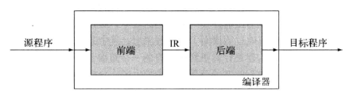
编译器的简单目的就是 “把一种语言转换成另一种语言” 的程序。
尽管中间还要加许多用作限制的修饰词，本质来说，应该就是 “翻译” 的功能。当然说 “翻译” 也不好，毕竟 “口译” 的英文就是 Interpret，又和 “解释” 扯上莫名其妙的关系了…
（图上的 IR 指的是 Intermediate Representation (中间表示)，好像写 CPU 的时候，某个文档中的图也有 IR 这个简称，当时还以为是 Instructions balabala。）
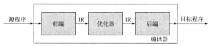
后面附了张加 优化器 的图，我想这个，正常人类应该很好理解。
在优化器中，IR 转换为更有效率的 IR。想必前端解析出来的 IR 直接用在后端上会对后端处理产生很大的威胁吧，我现在也不知道。
至于为什么一个编译器要分做 前端 和 后端。看了下还真和我想的一样。
如果有 $M$ 种语言，$N$ 种
ISA。
假设不存在前端与后端的概念，一种语言转换为一种指令集就是一个编译器，这样得有 $MN$ 个编译器。
但是假设前端和后端分开，约定好输入输出的前提下，只会有 $M + N$ 个部件，而它们组合起来就是编译器。
刚刚是直考虑这个 $M N$ 问题中的前后端，实际上还有 IR 呢。我想 IR 肯定不会是特定的，即使给定了源语言和目标语言，IR 也不一定就是唯一的，所以还是要实现很多的前后端吧…
（其实 $M + N$ 怪理想的，也不可能直接拼起来就能用吧？不会吧不会吧？）
1.3 转换概述
1.3.1 前端
前端（哦，没想到这里也是 front end 写作前端），旨在检查程序，并生成 IR 格式的输出。
The front-end deals with the language itself: scanning, parsing, the parse-tree.
书里面举的是英文的例子。我想对于编程语言的话，那些：
大概就是 $Assignment \to variable \ AssignSyb \ variable \ endmark$ 吧。
写数据库作业的时候，就看到学长发说说吐槽作业太多，这才第一次正式听说词法分析器、语法分析器这两个词。现在看的话，这两个就是前端大多数任务的担当了。
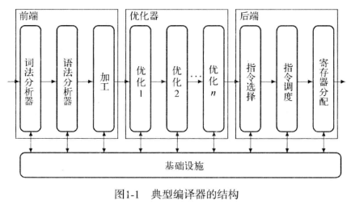
三个大的方框内，又有一些小的圆角矩形，每一个圆角矩形都代表 一趟。
算了算了，还是直接抄书吧：
- 词法分析器：将字符构成的串转换为单词构成的流。
- 语法分析器：判断输入流是否是源语言的一个句子。
- 类型检查：检查输入程序中对名字的使用在类型方面是否一致。
听起来蛮合理的，编译时报的错貌似就这些了吧（应该是？）
1.3.2 优化器
gcc 那个 -O2 -O3 应该就是优化器的选项了吧。
这里提到了一个 数据流分析 的名词，听说是个复杂的操作。
除了分析之外，还有转换。人写代码，总是会因各种各样的问题而写出一堆很废的代码，比如：
1 | int bound_i = 3, bound_j = 4; |
但万一这么写，是为了在人类角度看更容易理解呢（？）
这种程度的代码…相信编译器可以扳过来吧。
（如果我写了一个阶模乘，强大的现代编译器会不会把它优化成蒙哥马利乘呢…）
1.3.3 后端
The back-end deals with the target system.
Object code formats, the machine code itself and so on.
不管是哪里的寄存器，反正汇编语言很多指令都要涉及寄存器。反汇编一个可执行文件，能看到很多寄存器标号。而这些或许是源程序中没有写明的。（要都写明了，为啥不直接写汇编…）
书中举的例子是：
1 | t <- 2 * a * b * c * d |
为了让这个句子变成汇编语句，中间还有许多步骤。比如 决定右端乘法的顺序、加载数值、最终指令执行的顺序。
至于运算（乘法）的顺序，对于这个语句，如果这些 a, b, c, d 什么的就是整数，而不代表什么其他东西，那我仅凭我现在的认识，怎么乘都无所谓吧。
加载数值的话，要考虑寄存器的个数。寄存器里面一直都有值，但是那个值究竟之后 会不会被再次利用 却不一定。
数量有限、存取效率高的寄存器放在那里，一直不用就等于自废武功。为了加速，寄存器肯定是要极大化利用的。
现在只有这一条语句，即使加上所有的中间结果，那也不会超出 10 个，远远小于正常计算机内部的寄存器个数。但是程序一大起来，就不好判断哪一个寄存器是一直不用的了。
仔细一想，如果存在这么一个专门搞人的变量，开头用两三次，结尾再根据某个靠后的计算结果用一次。在程序中间运行的时候，的确它还会被利用，但是占着茅坑和上面说的自废武功又有何异233。像这种恶心人的变量，直接写回 最最最最底层的存储器 才是它应得的下场吧。
指令的执行顺序嘛。只要你不对我负责，我也不对你负责，那就随便绿。最少的周期，执行最多的指令，一开口就是老时间管理了。
和 体系结构课教的那个流水线 是差不多的道理。如果前后两个指令有交集，那我在不切换指令的前提下，除了 bubble 也没啥办法了。
1.4 自己瞎 bb
没上大学的时候，总会有远大的理想。具体的体现是 敢看知乎。
知乎上的个个都是人才，高考结束看完龙书的，大一第一个月就发 paper 的，我人都看傻了。后来，愈发认清自己，也就佛起来了。
编译器的确是个好玩意儿。
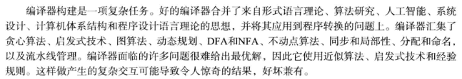
以前不了解，当然现在也不了解，就觉得编译器不就是个把 c 转成汇编的玩意儿吗。
但仔细一想，如果这种转换真就那么简单的话，为什么还要高级语言呢？
第二章 词法分析器
2.1 词法分析器
读了一点点，以本人目前的水平，词法分析器还是蛮难的嘛…但是书中说，这个部件已经算是简单的了。
其实平时写程序的时候，就想过：
tryexcept这些关键字是怎么判断的？- 一个句子是怎么判断出来的？
- 怎么能判断句子的合理性？
好吧这些问题或许有个答案了。上学期上了门 形式语言与自动机。我想除了哈工大、北航等大学，正常的大学都没有这门课吧？（大多数我猜都是合着 编译原理 一起上的）
比如 while，就可以通过一个自动机识别：
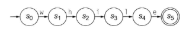
我就用书上的图，反正意思到位了就行。try except 这两个关键字也可以这么识别出来。
但是如果把一个小小的 while 放在庞大的程序代码中，读到 w 了，如何选择？如何判断？我还是很不清楚的。
一个句子怎么判断出来。这个也有点头绪。比如 C 语言，如果按照规范写，那是每行一句，可是每行也有可能存在多句话，所以应该把 遇到分号 算作一句话的中止。
但是还有比较复杂的情况。
1 | int index = 0; |
对于 first 而言，很好就可以判断分号是这句话的结束。但是对于下一句话，却需要在 printf 的第一个字母时算作开始。中间差了一个 }。
当然，要说的话，关于 {，我猜是有一个栈的。
- 栈空仍弹出
}会报错； }前必须是一个完整的句子。- 其后要么仍是
}； - 要么表示下一个句子的开始。
- …
- 其后要么仍是
对于句子的合理性，我想的是会设定出一系列的规则。这些规则分布在各趟中。词法分析器的规则，只是去读词，读句子。在不顾及语义的前提下，分析句子们。
2.2 识别单词
书上的识别单词就是使用 形式化语言 和 自动机 讲的。
像 try except while 这些关键字，只需要上面那张图的自动机就可以识别。
即使是遇到有些字母相同的，比如：double & do，也可以这样实现：
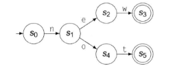
对于数字，那就更方便了。浮点有浮点的正则表达式：
事实是怎样，就写成怎样。
对于 C 语言的 注释 (/* */ 以及 //)，也会有类似的表示方法，只要所有都考虑周全。（然而考虑周全是件不简单的事）
2.4 正则表达式 -> 词法分析器
又开始 形式语言与自动机 了。我决定跳过这些 DFA, NFA。
这书写的哪里都挺好，就是老给后面挖坑，然后等着后面来填。填倒是应该都填了，不然大家对这本书评价不会这么搞。但是我也不是每天早七点、晚五点坐等 《编译器设计》的更新。记不住的记不住的。
2.4.2 正则表达式 -> NFA: Thompson
Thompson's Construction 是个好活。正常人看了之后都能学会 RE -> NFA。
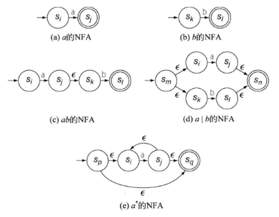
书上画的比较详细。我还找了某个 不存在的百科网站 的图，我觉得画的更好：
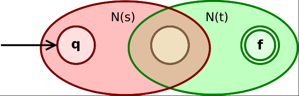
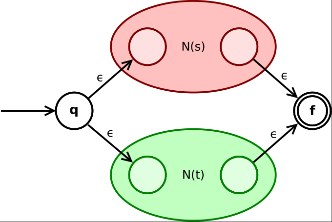
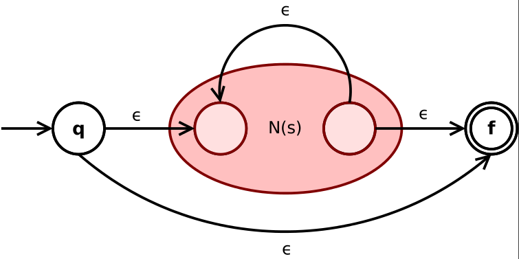
图片有点大，不过没关系。
对于 ab 的 NFA 要注意的是中间还要经过一次 epsilon。不存在百科的图里，中间跨越 N 的时候需要经过 epsilon。
对于 a|b 的 NFA，百科有如下解释：
State q goes via epsilon either to the initial state of N(s) or N(t).
Their final states become the intermediate states of the whole NFA.
And merge via two epsilon-transitions into the final state of NFA.
根据 Thompson's Construction，利用 RE 的优先级顺序画出一个树，这样后通过一个 RE 随便画出一个符合要求的 NFA 根本不是什么难事。麻烦的是如何把 NFA 转换为等价的 DFA。
2.4.3 NFA -> DFA: 子集构造
与其叫 子集构造法，不如叫 幂集构造(Powerset Construction)。
这个算法光看书上写的那几段干条条，肯定脑壳大。所以还是用不存在百科的图：
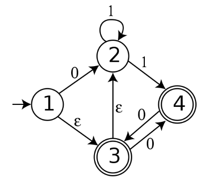
NFA 按照书上的定义:
允许在空串输入 $\epsilon$ 上进行转移的
FA，
其状态对同一字符输入可能有多种转移。
用人话说，NFA 就是 0/1 能大于 1 个去处，并且能有 epsilon-transition 的有穷自动机。
下面这个图是 确定性有穷自动机，每个状态 $A$ 的出度 $d^+(A) \le 2$，但是入度不一定。
（当前这个图的转移就是用的 0/1，所以出度 ≤ 2）
（尽管状态里面是一个集合，而非数字，那也是 DFA。发出转移，也是以 集合的身份 发出的，而非 集合中的元素。画的时候，抽象点写 $q_0, q_1…$ 这些状态符号可以代表很多东西）
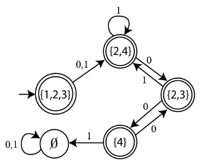
有一说一，JFLAP 中将 NFA 转换为 DFA 的方法也是这样的。
凡事都有个开头，NFA 都有唯一的起始状态 $q_0$，以此为原点，将所有可以由 $q_0$ 进行 epsilon-transition 得到的状态，全部纳入新 DFA 的起始节点的 集合 中。
之后遍历新 DFA 的起始节点的 集合，通过原 NFA 的 $\delta_N$ 得到新 DFA 的所有节点。
书中有言：
算法每前进一步，就从
WorkList中删除一个集合 $q$。
每个 $q$ 都表示原来的NFA中一个有效的配置。
我真的不觉得这句话很容易被读懂。
上学期学 算法设计与分析 的时候，课本上讲过 子集树 这个概念。
所有状态全部以 0/1 表示，q 个状态可以有 $2^q$ 个子集。
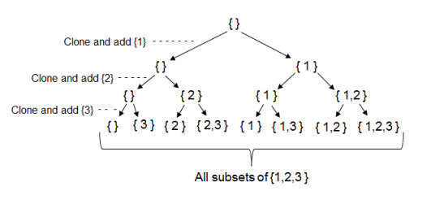
为什么不存在百科上，没有把这个算法叫做 Subset Construction，而叫做 Powerset Construction。我想原因就是这里。
算法进行一步，都从 WorkList 中删除一个集合 $q$。
这句话等价于 算法每进行一步，都有一个状态生成，且 DFA 中的状态不可重复。
生成了一个新状态，就好比少了一种 未来可能生成的新状态。（因为要是生成了旧状态，直接转移 就完事儿了）
至于 子集构造 啥时候结束，不增长了就结束呗。
2.4.4 DFA -> min DFA: Hopcroft-Karp Algorithm
爷学不会。
下学期开学之后再看。
2.4.5 识别器
- 识别一个 “拎出来” 的单词：
- 识别 “variable1+variable2”
- 要求结束于 易识别 的分隔符 -> “variable1 + variable2 “；
- 分隔符 必须环绕 单词 -> “ variable1 + variable2 “；
- 一直匹配下去，即使遇到了可接受状态，直至无路可走：
- 到了可接受状态 -> 成功识别；
- 为不可接受状态 -> 返回上一个的可接受状态。
- 可接收状态是个集合，分不出来到底是什么单词 -> 返回优先级最高的。
2.5 词法分析器实现
2.5.1 表驱动
昨晚睡觉之前搜了分词法分析器代码。看样子就是 表驱动 的。
前面书上画了好多状态机，所以从最最基础的来写，肯定连识别关键字都要自动机的写法。但是也可以 strcmp 呀。
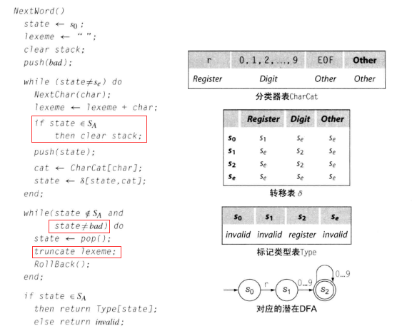
这张图前面又是一堆文字。其实看文字也看得懂，这段还不至于，还不至于。但是这段伪码有 3 个地方是应该说明的。
- 为了只保存 最后一个可接受状态；
- 说明跳出循环还有可能是
state为bad，栈空了，这样最后的if条件就不成立； truncate是lexeme + char的反义词。
这段代码是为了 表示寄存器的名字（$r[0-9]^+$）。
- 第一部分用于初始化；
- 第二部分根据输入流，运行如转移表 $\delta$ 中描述的
DFA； - 第三部分处理无路可走时 处在不可接收状态 的情况；
- 第四部分判断合理性。
多亏 ASCII 表是像现在这样设计的，不然或许会多写很多代码。
后面书上给出了一个 最长适配词法分析器，但是没细看了。
算法是给定的，只要还在做 词法分析 这件事，那么算法就不需要改变。
会 / 需要改变的是 正则表达式 / 自动机 / 转移表。
而 表驱动词法分析器，（表驱动表驱动）应该能够适配 所有 可能的转移表，一旦转移表给定，就能够对于输入给出输出。
2.5.2 直接编码
这种毫无疑问是最符合人类眼球的。
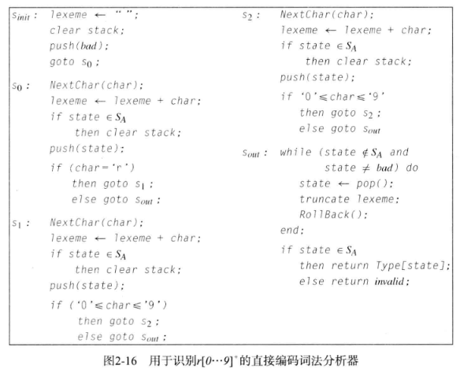
我想说这不是一眼就看得出来怎么回事？
直接编码书中说：无需显示表示 DFA 的当前状态和转移图，而是使用专门的代码片段来实现每个状态。
但是看起来明显比 代码实现的状态和转移逻辑 更清楚。
当然，这也仅仅限于少数几个状态。如果状态一多，那 直接编码式 的代码写法就和一般的 自动机 没有什么区别了。
即使使用精心挑选的变量名，也还是不如抽象出 表跳转逻辑 的代码好看。
2.5.3 手工编码
所以说 DFA 就是逊啊。逐字符的输入使用 DFA 是很容易实现，但是 I/O 耗时多。
后面书上给了 NextChar, RollBack 的两段伪码。我是没看出来为啥 Fence <- (Input + n) mod 2n，我怎么想都觉得是 Input - n。难不成作为 有效缓冲区起始地址 的 Fence 还跑到前面去了吗？
2.6 芜湖！起飞
2.6.3 无闭包的正则表达式
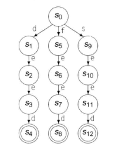
需要识别的字符串（键）有多长，就会经过多少个状态。
用这种方法生成的
DFA不能保证是最小的。
显然上图中的 “eed” 三个字母代表的状态可以合并。
无环DFA是 完美散列函数 的替代方案，当键值较少时，无环DFA可以表现为一个快速的识别器。
但随着键值增加、键长增加，散列会更快。
2.7 自己瞎 bb
回顾了一下，好像 词法分析器 和我最开始自己想的那个概念不太像。
在这里，词法分析器仅仅就是判断 单词可否接受 而已。
无论应用的工具如何变化（DFA / NFA / RE），使用的算法又是怎样（Thompson / Powerset / Hopcroft-Karp），采取的又是何种策略（表驱动 / 直接编码 / 手工编码），最终的目的都是基于一个 自动机，写出足以描述自动机 转移函数，并具备 回滚能力 的词法分析器。
说是基于自动机，那是因为：
我想，即使是
NFA，应该程序也能模拟吧，只不过是困难一些。
毕竟NFA转换为DFA的算法在那里写着呢。
NFA 当然可以，但是 DFA 肯定更简单，最简化的 DFA 更是如此。
这让我想起上 离散数学 的时候，有个同学跟我说的一句话：
看起来很枯燥，但是每一章节都对应计算机领域的一些应用。
第三章 语法分析器
3.1 提及词法分析器
词法分析器，词法分析器，顾名思义就是把输入进来的 字符串流 转换成一个个 单词流。词法分析器中又有单词的类型，所以词法分析器的输出是 归类单词流。
- 归类，表示给出某单词的 “词性”，比如：
<"123.4", "number:float">, <"switch", "reserved">之类； - 单词，表示词法分析器已经把 串 转化为 单词（不知道有没有分隔符什么的）；
- 流，表示分析好的单词与词性组成的 “数据结构”。
3.2 语法
毫无疑问，语法分析器上编译原理的时候是要写的。啊这，所以得好好看呀。
平常还是经常把 “语法” 两个字挂在嘴边的嘛。某个地方标了红线，就 “哦，语法不对”。
反而变量名、标识符这些写错，不会下意识弹出来一句 “哦！词法不对”。
语法分析器，字面意思是要分析语法，可是分析之前得先认识语法。
3.2.1 上下文无关语法
有一说一，爷这部分上课的时候是没学好的。
我连为什么这里讲语法分析器 不用 RE 而用 CFG 都不知道。
那么感谢 KDL< 让我明白了我早该明白的道理。
对于 $a \times b + c \div d$，这个式子。
- 按照
RE的角度来，那是读了就读了。- 看到 $a$，存一下。
- 看到 $\times$，赶快读下一个 $b$，立刻计算，将结果计为 $tmp1$。
- 看到 $+$，立刻把 $tmp1$ 和 $c$ 放一起进行加法运算得到结果 $tmp2$。
- 看到 $\div$，迅速将 $d$ 作除数，$tmp2$ 作被除数。
- 最后输出了结果。实际的计算顺序等价于：$((a \times b) + c) \div d$。
- 按照
CFG的角度来，还要进行优先级的判断。CFG能够做到完全是因为它有一个 栈。- 反正就是正常人类的计算方式。
- 但是也可以定义非人类的计算方式，比如 $\times$ 优先，$+$ 其次，$\div$ 最后…
在正则语言中，如果使用后面的 推导式 来写，那么无论是怎样的正则表达式，都必定受限于：
1 | A -> a |
（这里 A, B 指的是变元，a 是终结符，当然，这里的 A -> aB 和 A -> a 都不一定只有一个）
（由于 a 为输入，B 代表下一个状态，因此只是形式必须是这样的形式）
可以想象，这样的语言是不配被分析语法的（？）
退一百步说，连一般的算术表达式都无法保证优先级，更何况其他运算符的优先级顺序呢。
书中一直在举 优先级 的例子。这是因为语言，大部分就是优先级之间的考量，比如：
1 | int main() { |
诚然，里面需要识别 cout 究竟是什么，需要数清 { } 的匹配关系。
但是的确涉及了许多优先级，!, ::, <<, >>, ()…
所以，RE 不行。
但是 RE 这种推导式在构成串上，却是极好的。
这也是为什么 词法分析器针对 DFA，而语法分析器分析的是 CFG。
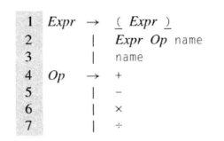
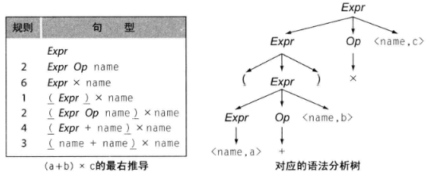
最右推导 (
Right Most Derivation)，书上写的是：“一种在每个步骤都 重写最右侧的 非终结符 的推导”
按照个人理解，就是给定一个串，从起始符号开始，使用推导式，按照串 从右向左，由外及内 的顺序，推导出和给定串一样的串。
纯个人理解，L(G) 存在二义性，表现在对于一个 可接受状态，不仅存在多条路径抵达，而且相同过程的个数相等。（或许有问题）
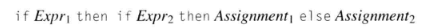
1 | if Expr1 then |
（相较于没有 then，有了 then 并没有什么用）
所以说 C 会在没有 {} 的前提下，选择第一种作为默认方案（即使写成第二种），而同时允许两种情况存在的 Python 会选择用 缩进 来标识。
同时，为了避免上面这种情况发生，才有了 else if。
3.2.4 将语义编码到结构中
1 | Goal -> Expr |
一组推导式，明眼人一眼就看出括号的优先级最高。而最先被推导出来的 +/- 却是优先级最低的。
毕竟越先推出来，位于语法分析树的层是越高的，肯定越后参与运算。
到底是先看层高的（根），还是层低的（叶子），就会分成两种分析方式。
3.3 自顶向下语法分析
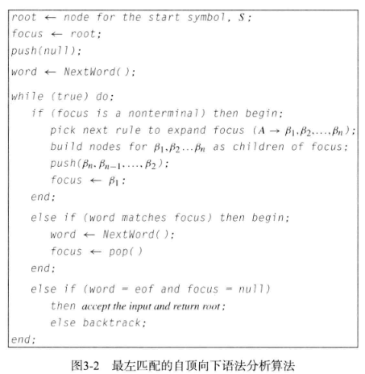
这代码还蛮好懂的。
- 第一，
if里把focus会把关注点放在 当前节点的最左子节点 上； - 第二，
else if表明当前为终结符，下一个读入的居然还能匹配语法；（比如int a = 3;;吧） - 第三，
else if指分析成功； - 第四，
else指的是匹配失败，需要 回退。
回退到什么地方，和 if 块中的操作有关。应该去尝试其他的规则。如果同级规则都不匹配，需要将输入流恢复原状，之后再匹配上一级规则。
但是这样会面临一个问题。
这个问题我记得 形式语言自动机 给我们讲过的，可是翻课件翻不到…
3.3.1 左递归
假设 当前节点不是根节点。
目前，关注点正放在 当前节点的最左子节点 上。但是 当前节点 也是其父节点的 最左子节点。那么，既然其父节点能够产生一个 可以继续产生子节点 的节点，其本身的最左子节点应该也 可 以相同推导式 继续产生子节点。也就是说，绝不可能通过持续关注最左子节点，使得推导结果全为终结符。
（具体情况，类似数学归纳法：A 家的孩子随母姓 A，并且只留女儿。现在 A 家存在一个女性，育有女儿，那么这家未来的所有女性都姓 A）
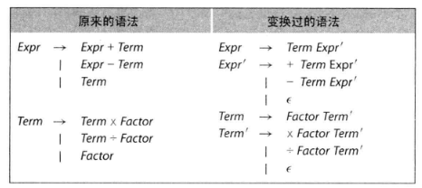
这是我觉得很有问题的一张图。我是觉得应该：
1 | Expr' -> epsilon |
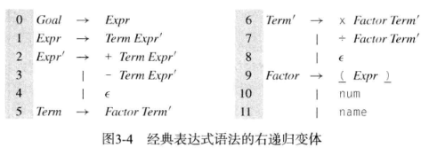
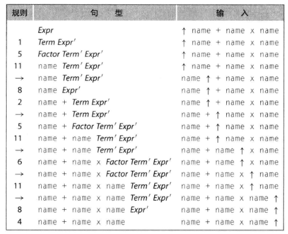
比如这张图。当然，要说的话，书上写的是 右递归，可是也没人硬定义一个左右呢（就硬抬）
需要注意的是，虽说是从 $\epsilon$ 开始，但是并不是什么时候都推成 $\epsilon$，遇到了符号，就要变成符号！！！！（比如 name Expr' -> name + Term Expr'，就是用的第 2 条）
消除左递归，有两种方法，第一种是这样加 $\epsilon$，另外一种就是交叉写推导式。
但无论如何，消除左递归，只是解决 左递归 这一个问题。
3.3.2 无回溯
必须说明这样一个令人痛苦的事实：
不是所有的CFG都有无回溯语法。
时刻记住，lookahead symbol是为了杀 左递归，左因子提取是为了杀lookahead symbol的无效化；消除左递归 不等于 产生无回溯语法。
人在考试做 语法分析树 题目的时候，为什么能一下子写出正确的推导过程？（当然也不排除我因 nt 写偏，甚至做错的可能）
这是因为人可以看题目！如果题目只能看一次的话，那就是人的记性好！
好吧，其实是因为人在判断用哪条推导式的时候，不仅仅根据自己 已经推导到了的位置，还会根据 未来才会读到的单词 进行判断。
对上面那个语法而言，语法分析器可以利用一个简单的修改来避免回溯。在语法分析器去选择下一条规则时，它可以 同时考虑当前关注的符号以及下一个输入符号，称为前瞻符号 (lookahead symbol)。
通过前瞻一个符号，语法分析器可以消除在解析 右递归表达式语法 时 多种选择 造成的不确定性。
你以为我只看到 name，实际上我连 name 后面的加号都看到了。一切都是 lookahead symbol 中注定。
3.3.3 FIRST Set & FOLLOW Set
FIRST 集合指的是：对于 $\alpha$，FIRST($\alpha$) 是从 $\alpha$ 推导出的 语句开头 可能出现的 终结符 的集合。
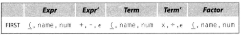
FOLLOW 集合指的是：对于 非终结符 $\alpha$，FOLLOW($\alpha$) 是在语句中 紧接 着 $\alpha$ 出现的 单词 的集合。
（我硬是觉得这个表有问题）
所以有关这两个集合，之后我学了再聊。
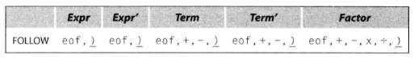
$FIRST^+(A \to \beta) = FIRST(\beta) \quad if \ \epsilon \ \notin \ FIRST(\beta)$
$FIRST^+(A \to \beta) = FIRST(\beta) \ \bigcup \ FOLLOW(A) \quad else$
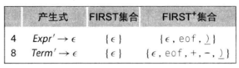
3.3.4 左因子提取消除回溯
对于函数调用，的确 lookahead symbol 就不管用了：
1 | Factor -> name |
关于 Factor 的三个推导式都是 name...，导致根本无法通过下一个符号（这里指 name）来知晓到底选择哪条推导式。
于是 左因子提取 呼之欲出，我甚至连啥是左因子提取都没兴趣继续写了，因为太明显。
3.3.5 自顶向下的递归下降语法分析器
递归下降… 一个不熟悉的名词。
对于一个简单的三结果推导式：
1 | FIRST+ |
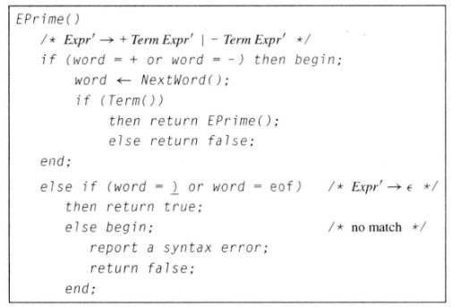
书上说了两段话，但是都不如这段程序清楚。
试想，程序处理代码文本，根据当前的表达式，如果现在是 最左推导 的话，顺序利用 lookahead symbol 拿到下一个 word 之后，会根据当前 Expr' 的 FIRST+ 进入程序框中的 if-elseif-else。
如果是前两条推导式，那么还需要判断下一个 word 是否是 Term，如果是的话，就需要对下一个 Expr' 进行 EPrime 处理。
如果忘记了 Expr' 是什么，可以参照之前的图：（Expr' Term' 都是为了防止 左递归 而所作的改进，并采取 右递归 避免）
如此可以看出，只要是一个非终结符(Expr')，就需要进行 EPrime 的处理。所以写了一个递归。
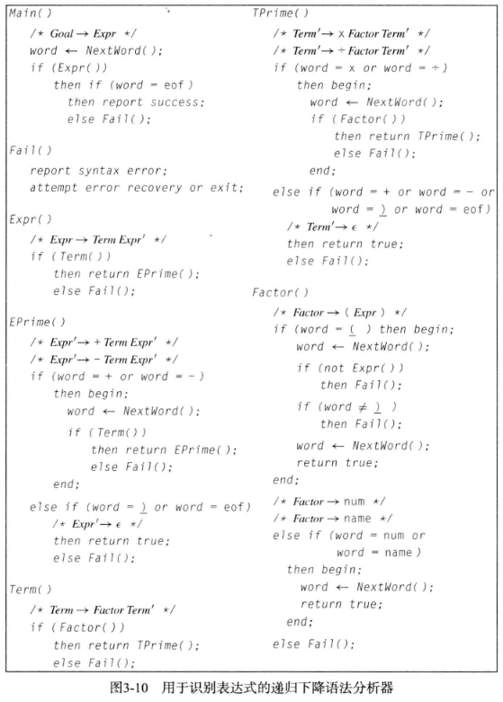
3.3.3 表驱动的 LL(1) 语法分析器
由于只是看个理论，先了解一下，所以暂时并没有以自己写出来一个语法分析器为最终目标，这才一切都过的这么快。实际上上一章节应该需要看更久时间的。上一节的内容实际上应该已经提供了完成一个 简单语法分析器 的所有理论知识。
通过 FIRST+, FOLLOW, FIRST，可以给语法分析器提供非常多的信息。
其中，FIRST+ 又是最早接触、最为重要的集合。LL(1) 的意思就是：
由左（Left, L）到右扫描输入；
构建一个最左推导（Leftmost, L）；
其中只使用 1 个lookahead symbol（1）。
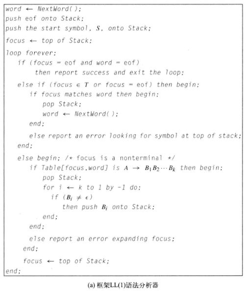
上面说那几个集合等学了之后再看，但是不摸清那三个集合，这些玩意儿完全理解不了啊。
根据我没理解的那个 FIRST+ 集合，生成了如下这张表：
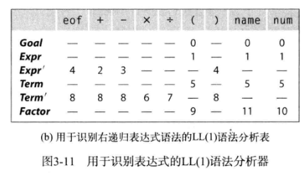
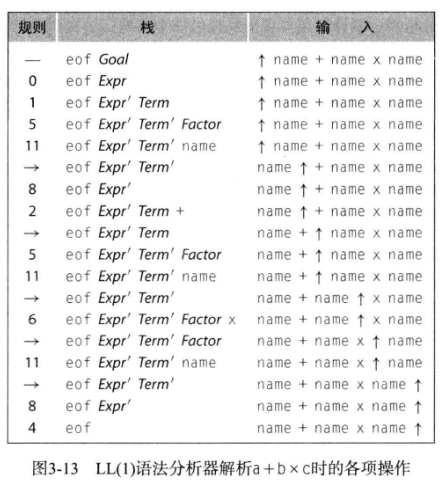
（注：上面的数字就是 FIRST+ 中的序号，比如 8，对照一下上面的 FIRST+ 就知道了）
通过 3-11 这个图，以及 3-13 图，就能知道 LL(1) 已经开始有了自己的逻辑，并且作为 无回溯算法，整体运行十分高效。
与之前的普通语法分析器不一样，之前的是从左向右，依次读取，并将生成的 Factor -> terminal 放置在左侧。但是 LL(1) 利用了一个栈，用于存储解析需要使用的 Expr' Term' Factor 等符号，并且一旦生成与输入相匹配的 word，就会弹出，从而继续生成 word。
并且 LL(1) 语法分析器的步骤清晰明了：
- 生成可用的
FIRST, FOLLOW, FIRST+，进而生成Table； - 初始化栈、
focus； - 从左向右 输入被分析文本，通过
lookahead symbol可以获知下一个word； - 使用获知的下一个
word查找Table，得到使用的规则（循环）； - 直至 终结符 出现，弹出终结符，继续输入文本，重复第 4 步；
- 直至输入文本为
epsilon/eof，且栈中仅有eof（栈底符号），终止程序。
在第 4 步，一旦下一个 word 使得当前 Expr' Term' Factor 不存在 与之对应的规则，那么说明 语法错误！ 芜湖！
妙，太妙了。
爷看了下目录，后面还有什么 LR(1)，我不管那个分析器多么高效，至少这个 LL(1) 我看懂了！（或许吧）
而且我觉得很舒服，整体下来没有什么多余的地方（除了 Table 消耗的空间或许会很大之外），我现在猛吹 LL(1) 嗷。
因此，不得不说这种做法相较于之前的 右递归经典分析法 有着许多优势。
3.4 自底向上语法分析
顾名思义。自顶而下 指的是一切由 Goal 起始，通过一系列推导式，做到 道生一，一生二， 二生三，三生万物。
那么 自底而上，按照个人理解，就是 百川东入海。文本输入至语法分析器，考察的不再是如自顶而下一般的 能否生成与输入文本相同的终结符串，而是看最终能不能归于 Goal。
这个…过程想起来不难，但是具体到实现现在看起来还有点困难的啊。在不知道任何背景和辅助工具的前提下，想起来也是一个复杂度阶乘的玩意儿。
不过仅仅是了解到这里，我也能不通过书了解到一个事实：
这自底向上不存在左递归问题啊！
对于自顶向下而言，是需要对输入的规则进行处理的，不然一旦左递归，就是无止境的循环。
对于产生式 $A \to \beta$，可以用字母 $k$ 替换，那么就称 $(A \to \beta, k)$ 为一个 句柄。
然后，爷第一次知道归约的英文是 reduction，我的天，我形式语言自动机上课在干什么，拿良果然是自作自受。对于一个无歧义的语法，最右推导是唯一的。
LR(1) 顾名思义，就是要从左向右输入，做一个 最右推导。
3.4.1 LR(1) 语法分析算法
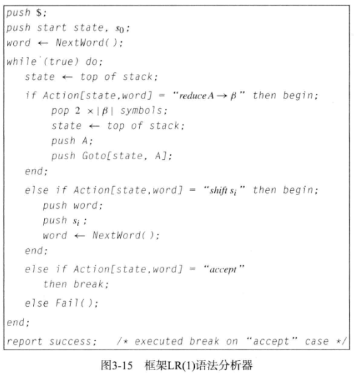
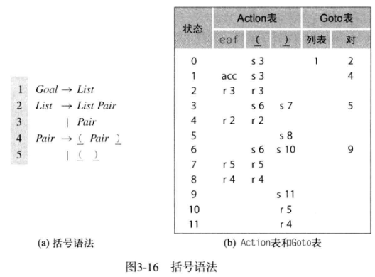
话不多说，先放两张图。
从程序当中可以看到，LR(1) 完全按照 Action, Goto 两个表来完成归约。
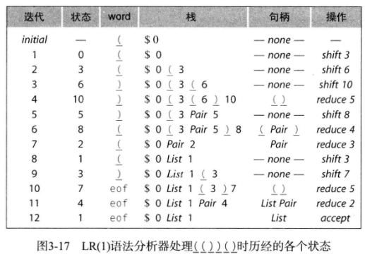
然后跟着这个关于 (())() 解析的过程走一遍，就大概明白 LR(1) 在做什么了。
所谓的 shift 实际是根据 lookahead symbol 选择正确的转移。
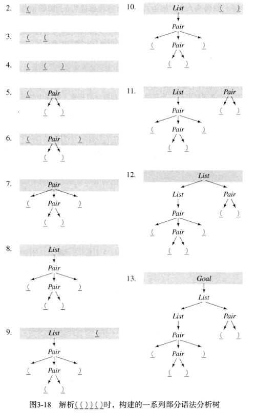
我是觉得没有 LL(1) 好。
3.5 实际问题
3.5.1 错误恢复
对哈，编译器报错每次又不是只报一个错！应该得要一种方法来恢复当前的错误，以便于继续分析程序。
做法是先到一个错误的状态中继续输入文本，直到匹配上一个地方，就立刻复活。
1 | int a, b, c; |
就比如这段程序，我寻思看到 b = c + 2; 之后，应该就进入错误状态了吧，但读到 c = 6; 时又原地复活，后面读到 d = a + c; 又死，之后再复活。
3.5.3 二义性
书中说，FORTRAN 的数组和函数都是用的圆括号。那么按理来说就无法进行区分。
这里书中给出了两种解决方法：
- 允许问题在语法分析器中存在，将问题留给后续的 转换过程，利用 声明取得的类型信息 解决；
- 在词法分析器和语法分析器中构建协议，明确 先定义再使用，以便将复合的推导式分解为 FuncRef -> func-name( ArgList ) 以及 ArrRef -> arr-name( ArgList )
3.5.4 左 / 右结合
我不想提及左 / 右递归对栈深度的影响。我更愿意想更顺的左 / 右递归对运算的结合性影响。
通过上面的了解，左递归必定导致左结合，右递归必定导致右结合。在有括号严格限制的情况下，两种结合方式在正常人类运算范畴都能处理的很好。但是一旦缺少括号，右结合便不符合正常人类数值计算的大脑。
a - b + c 不可能等价于 a - (b + c)，除非 c = 0。所以使用右递归固然有优势，但是此时此刻，也需要进行左递归。书中管这个叫做 左递归和右递归之间的折中。
3.6 高级玩意儿
3.6.1 语法优化
对于 LR(1) 语法分析器，我没有怎么细看。但是也能够理解，它不再需要使用一些特殊方法消除左递归。那么就不需要 将其推导式复杂化。
对于如下：
1 | Goal -> Expr |
这样的推导式，甚至可以删去中间无用的符号，来减少递归时的时间消耗：
1 | Term -> Term * ( Expr ) |
比如这样，就缩去了 Factor 的三个推导式。
但是按道理说，是可以直接写到 Goal 那里的。可是这样，和分析一条语句又有什么差别呢？
对于比较简短的推导式，可以缩去，但是如果推导式较为复杂，考虑的情况也就多了起来。
比如上面的 Term, Factor 两个非终结符，均有 三条 推导式。那么如若将 Factor 缩进 Term 中，势必会出现 3*3 = 9 条推导式。（不能小于 9 的原因是 不允许二义性出现）
3.6.2 表格优化
或许之前提到过。
对于 LR(1) 语法分析器而言，一旦推导式数目增加，Action, Goto 两个表格消耗的空间也会增加。
行列合并 是一种方法。通过建立一个 多对一 的映射关系表，有 MySQL 内味儿了。
第二种方法是统一部分非终结符名称。比如说整型和浮点型都是数字，类似这样。书中只介绍了 LL(1), LR(1) 两种语法分析器。大体上都是从左向右输入，但是具体的处理手段不同。除了这两种之外，还有其他的方法。
3.7 自己瞎 bb
书中也写了：
自顶向下的递归下降语法分析器有自身的一些优势。
可以证明它们最容易以手工编码方式构建的语法分析器。
果然啊，我的智力水平也就仅限于此了吗（？）
然后书中还说了一句：
… 因而，从现成的语法分析器生成器开始，总比从头开始实现一个语法分析器生成器要好。
哈哈哈哈哈…
除了书中写的这些之外，果然读书的是会面临各种各样的问题。脑子一天运行的时间有限这是其一，其二是明明知道静下心来看就能看明白，但是还是静不下来…
不免有些伤心了。
比如 LR(1) 那一部分，就没有特别仔细去看，当然也就没有了解，只是大致浏览了一遍的程度而已。